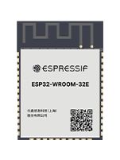

This project template is the base for the
ESP32-WROOM module.
ESP32-WROOM-32E and ESP32-WROOM-32UE are two powerful, generic Wi-Fi + Bluetooth + Bluetooth LE
MCU modules that target a wide variety of applications, ranging from low-power sensor networks to the most
demanding tasks, such as voice encoding, music streaming and MP3 decoding.
ESP32-WROOM-32E comes with a PCB antenna, and ESP32-WROOM-32UE with a connector for an external
antenna.

(c)2022 Espressif Systems